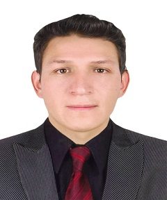
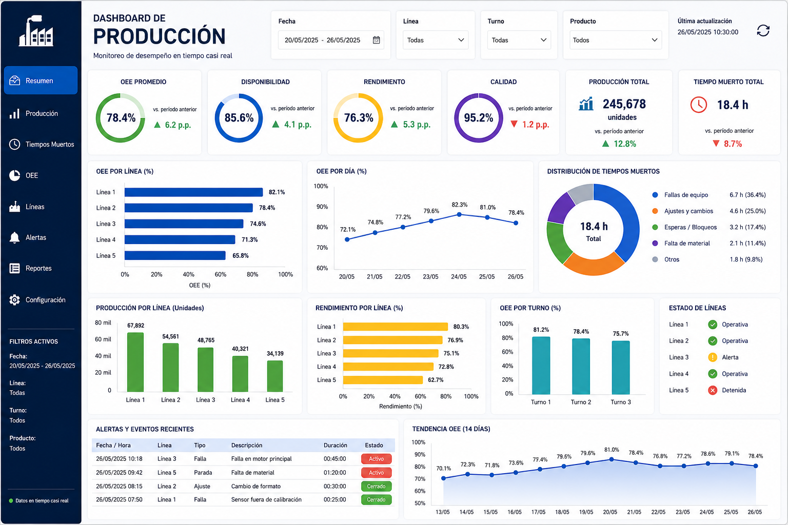
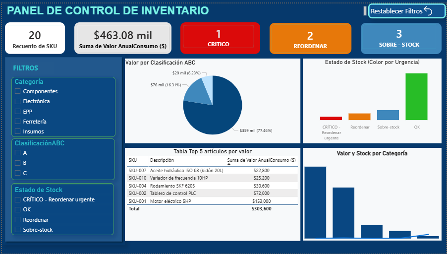
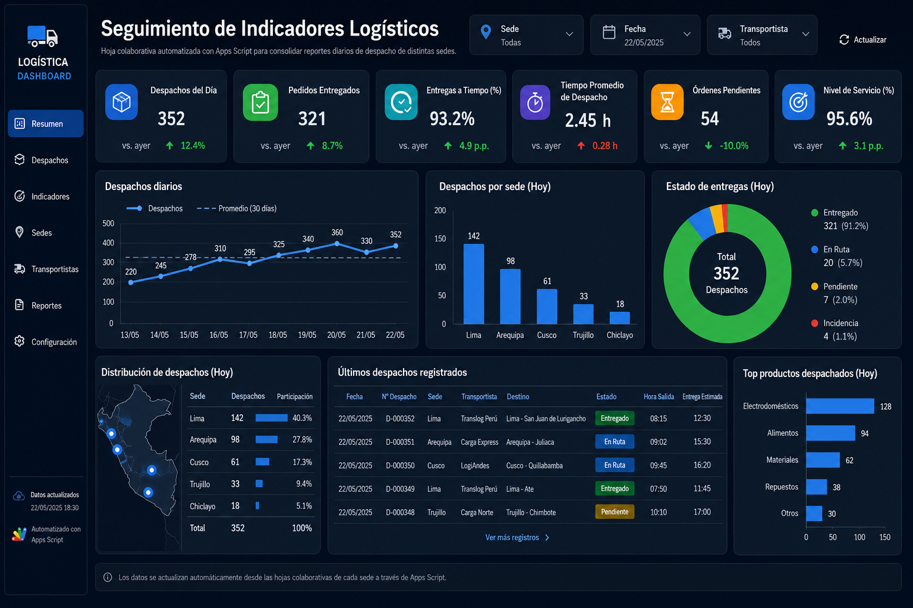
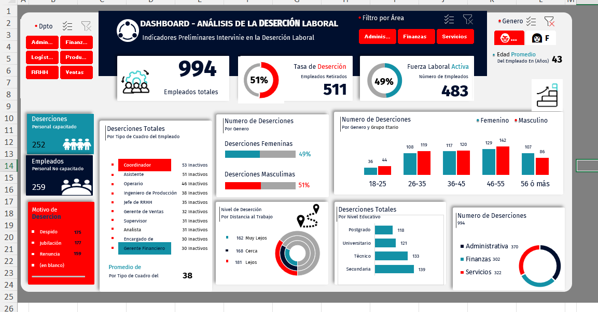

Convierto datos de
planta en decisiones.
Bachiller en Ingeniería Industrial con interés en los sectores industrial y minero. Experiencia en análisis de datos, gestión de proyectos y mejora de procesos mediante el uso de indicadores, dashboards y herramientas de inteligencia de negocios. Destaco por mi capacidad analítica, orientación a resultados y compromiso con la mejora continua.
Ingeniería aplicada a datos reales
De la línea de producción a la hoja de cálculo: entiendo el proceso antes de modelarlo.
Soy bachiller en Ingeniería Industrial. Me especializo en levantar datos de procesos operativos y convertirlos en herramientas que otros puedan usar para decidir: dashboards, indicadores y modelos de simulación simple.
Trabajo principalmente con Power BI, Excel avanzado y Google Sheets, combinando fundamentos de ingeniería de procesos (Lean, estudio de tiempos, control estadístico) con visualización de datos.
Busco oportunidades en análisis de operaciones, mejora continua o business intelligence, donde pueda seguir cerrando la brecha entre planta y datos.
- Power BI
- Excel avanzado (macros, tablas dinámicas)
- Google Sheets (Apps Script)
- Estudio de tiempos y métodos
- SQL básico
Fichas técnicas de trabajo
Selección de proyectos aplicados a procesos operativos y logísticos.

Dashboard de producción
Tablero para monitorear OEE, tiempos muertos y rendimiento por línea de producción en tiempo casi real.

Modelo de control de inventario
Sistema de reorden automático con clasificación ABC y alertas de stock mínimo por macros en VBA.

Seguimiento de indicadores logísticos
Hoja colaborativa automatizada con Apps Script para consolidar reportes diarios de despacho de distintas sedes.

ANÁLISIS DE DESERCIÓN LABORAL
Dashboard interactivo en Microsoft Excel para el análisis de la deserción laboral, integrando indicadores clave (KPIs), tablas dinámicas, gráficos dinámicos y segmentadores. El proyecto permite analizar la rotación de personal por área, género, edad, cargo, nivel educativo, motivos de deserción y distancia al trabajo, facilitando la toma de decisiones mediante reportes visuales e interactivos..

REDISTRIBUCION DE PLANTA
Proyecto de redistribución de planta desarrollado para una empresa manufacturera con el objetivo de optimizar el flujo de materiales, reducir desplazamientos innecesarios y mejorar la eficiencia operativa mediante técnicas de distribución en planta..
Sistema de Gestión Documental en Excel con VBA
Desarrollo de una aplicación en Microsoft Excel utilizando VBA para gestionar el registro, búsqueda y administración de documentos de manera automatizada. El sistema incorpora una interfaz gráfica (UserForm), validación de datos y operaciones CRUD (Crear, Consultar, Actualizar y Eliminar), optimizando el control y seguimiento de la información.
Cómo abordo cada proyecto
Levantamiento
Entiendo el proceso en campo antes de tocar los datos: qué se mide, quién lo usa y para qué.
Limpieza y modelado
Estructuro los datos, defino indicadores clave y construyo el modelo base.
Visualización
Diseño el tablero o reporte priorizando lo que la persona debe decidir, no lo que es fácil de graficar.
Iteración
Reviso con el usuario final y ajusto hasta que la herramienta se use de verdad.